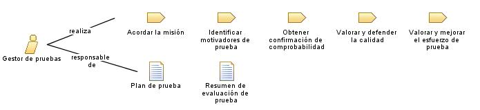

|
| Este rol dirige el esfuerzo de prueba global. Esto incluye el apoyo de calidad y prueba, la planificación y gestión de recursos y la resolución de cuestiones que impiden el esfuerzo de prueba. |
| Conjuntos de roles: Verificadores, Gestores |
|
Relaciones
 |
| Modifica |
|
| Uso del proceso |
|
Descripción principal
|
Los roles organizan la responsabilidad de efectuar tareas y desarrollar productos de trabajo en grupos lógicos. Cada
rol se puede asignar a una o más personas, y cada persona puede desempeñar uno o más roles. Cuando se seleccione
personal para el rol de Gestor de
pruebas, debe tener en cuenta las habilidades necesarias para el rol y los diferentes enfoques que puede adoptar
para asignar personal al rol.
|
Personal
| Habilidades |
Recibe soporte de las habilidades básicas y la conveniencia siguiente:
-
conocimiento general de todos los aspectos del proceso de ingeniería de software
-
experiencia en una amplia variedad de esfuerzos de prueba, técnicas y herramientas
-
habilidades de las personas, especialmente en diplomacia y en abogacía
-
habilidades de planificación y gestión
-
conocimiento del dominio, sistema o aplicación que se somete a prueba (deseable)
-
experiencia en la programación o gestión de los equipos de programación (deseable)
Este rol es responsable básicamente de:
-
Negociar el objetivo constante y los entregables del esfuerzo de prueba
-
Garantizar la planificación y gestión apropiadas de los recursos de prueba
-
Valorar el progreso y la eficacia del esfuerzo de prueba
-
Apoyar el nivel apropiado de calidad con la resolución de defectos importantes
-
Abogar por un nivel apropiado de comprobabilidad centrado en el proceso de desarrollo de software
|
| Propuestas de asignación |
El rol Gestor de pruebas se puede asignar
de los modos siguientes:
-
Asigne un miembro del personal para que desempeñe sólo el rol Gestor de pruebas. Este es un enfoque que se adopta
habitualmente y que resulta especialmente adecuado para grandes equipos o equipos más pequeños donde el gestor
de proyectos tiene una experiencia mínima en pruebas.
-
Asigne un miembro del personal para que desempeñe los roles de Gestor de proyectos y Gestor de pruebas. Esta estrategia
es una buena opción para equipos de prueba más pequeños.
-
Asigne un miembro del personal para que desempeñe los roles Gestor de pruebas y Diseñador de pruebas. Esta estrategia
también es una buena opción para equipos de prueba más pequeños. Una persona que desempeñe ambos roles necesita
tener fuertes habilidades de gestión y liderazgo así como fuertes habilidades técnicas y experiencia.
-
Asigne un miembro del personal para que desempeñe los roles Gestor de pruebas y Analista de pruebas. Esta estrategia es
otra opción para equipos de prueba pequeños o medianos. Debe tener cuidado de que los pormenores del rol
Analista de pruebas no tengan un efecto adverso en las responsabilidades del rol gestor de pruebas. Mitigue este riesgo asignando menos tareas
críticas del analista de pruebas a una persona que desempeñe ambos roles, dejando las tareas más importantes a
los miembros del equipo sin responsabilidades directas de gestión.
|
Más información
© Copyright IBM Corp. 1987, 2006. Reservados todos los derechos.
|
|